videomk main screen, composer, Add photos and upload journey (light, then dark)
Empty startVideos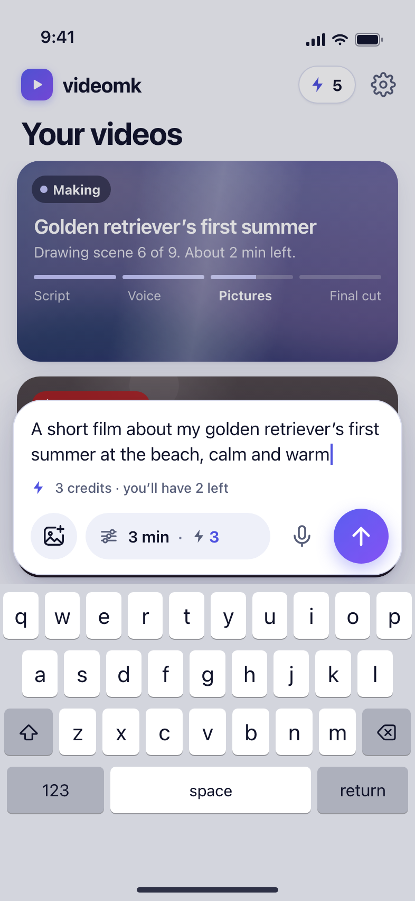
Ready to send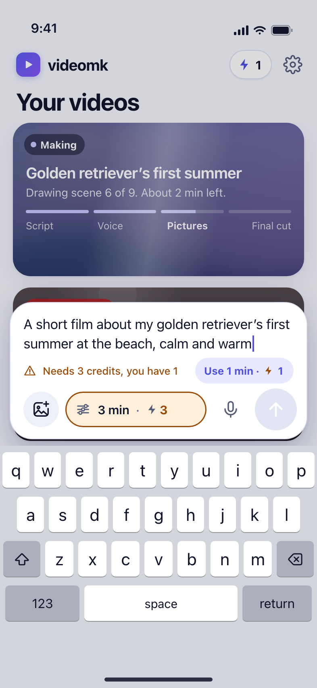
Not affordable: one-tap fix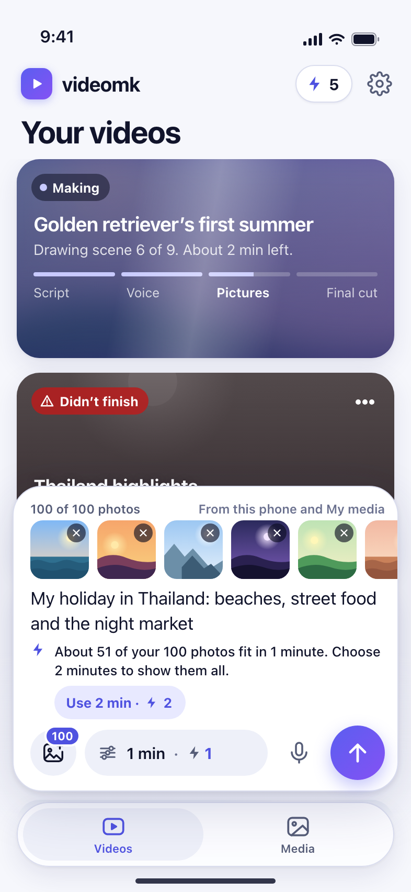
With 100 photos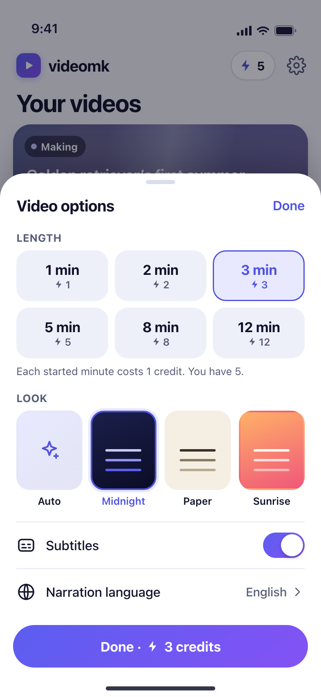
Video options  Add photos: This phone
Add photos: This phone Add photos: My media
Add photos: My media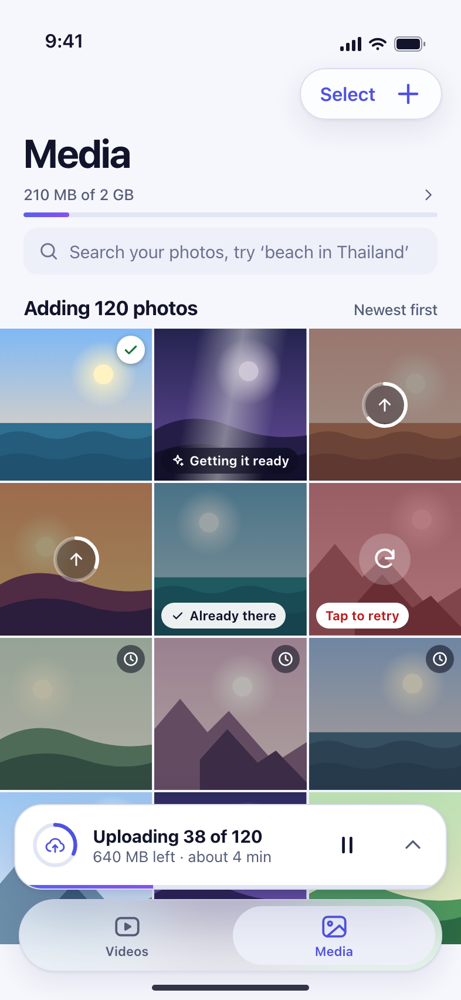
Media: uploading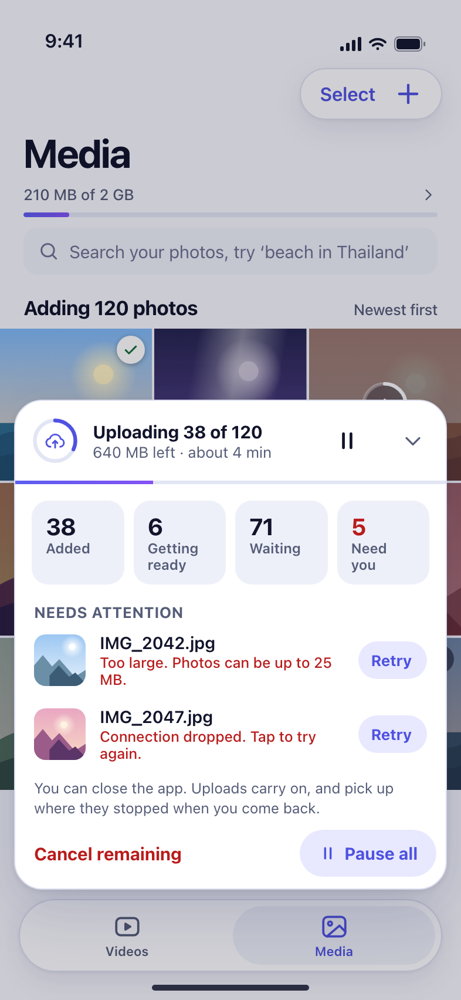
Media: queue open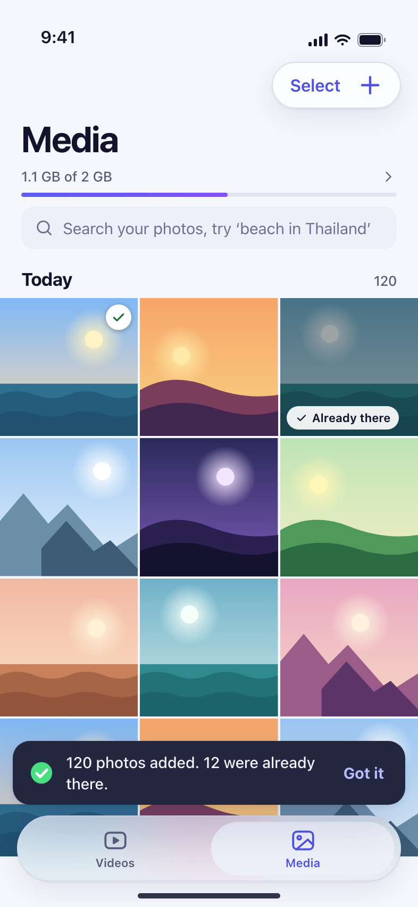
Media: done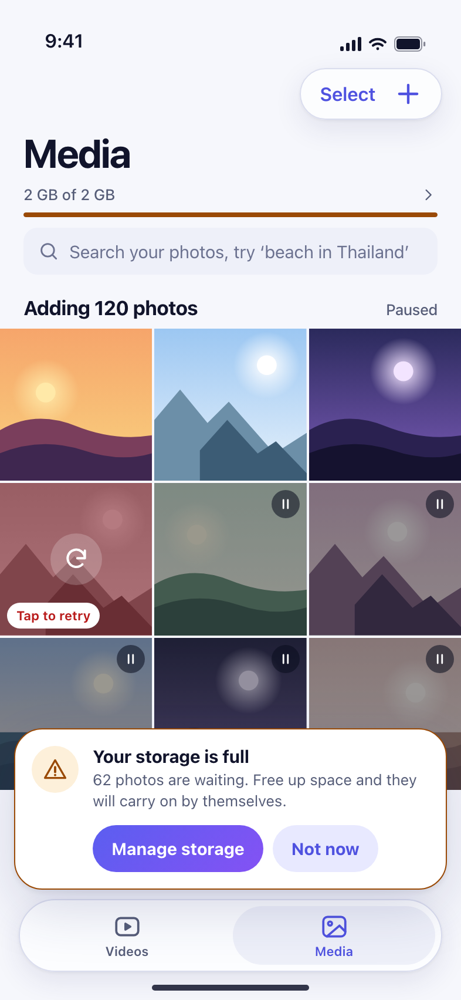
Media: storage full Add photos: This phone
Add photos: This phone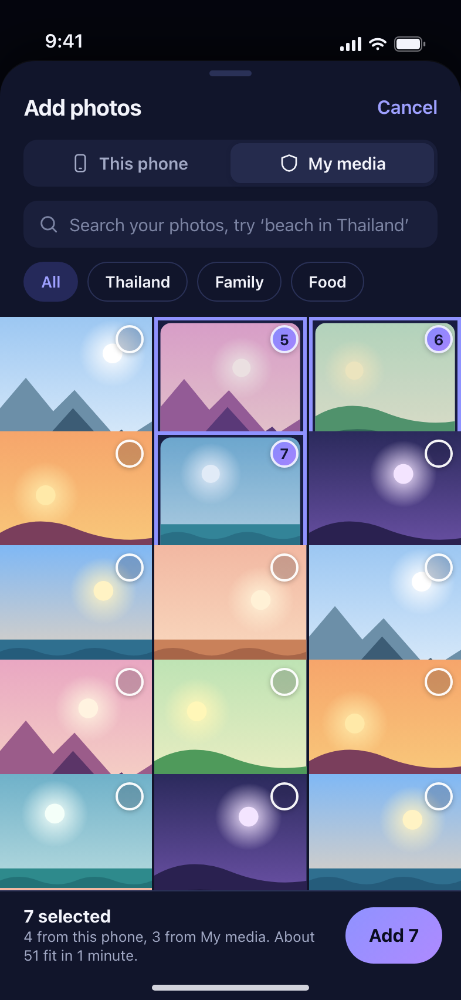
Add photos: My media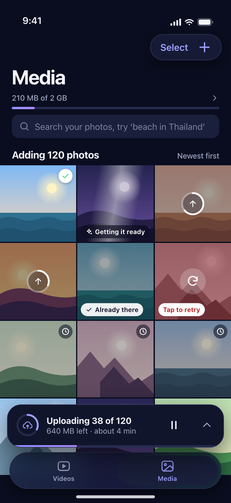
Media: uploading Media: queue open
Media: queue open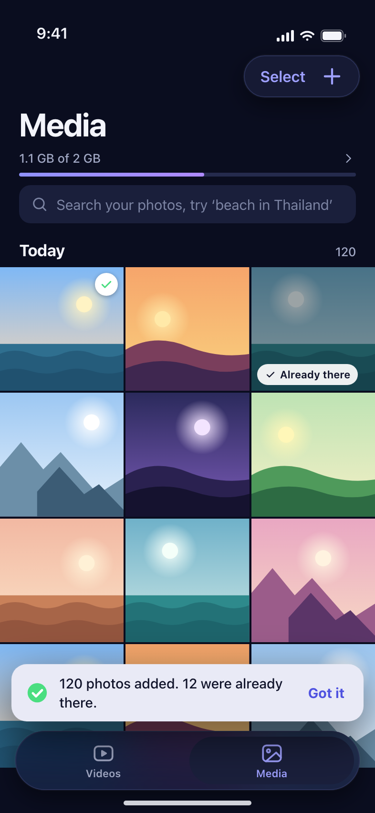
Media: done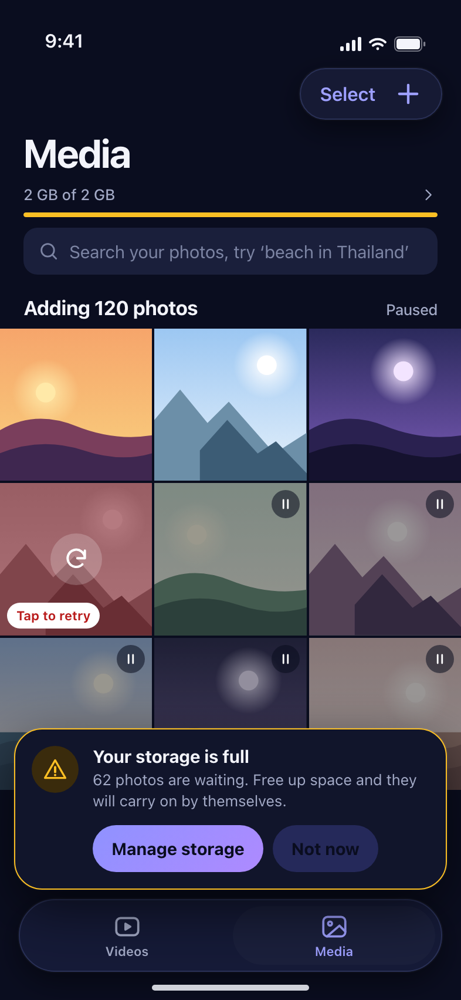
Media: storage full